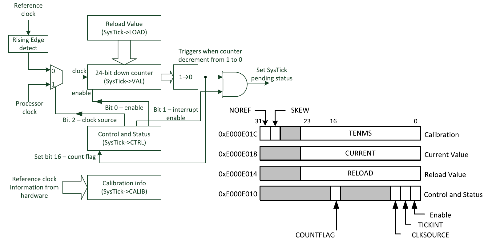
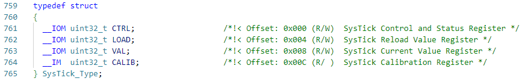
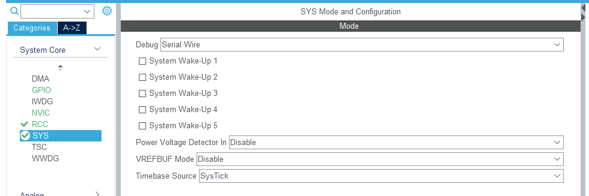
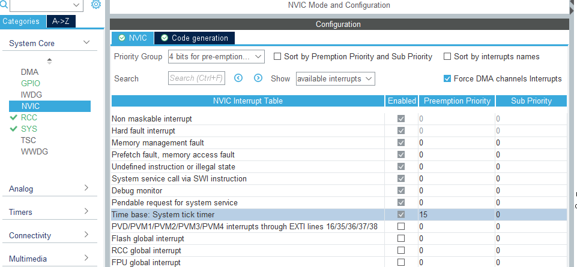
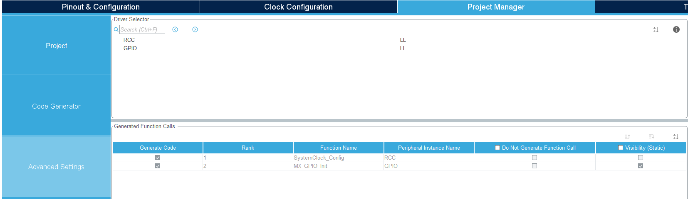
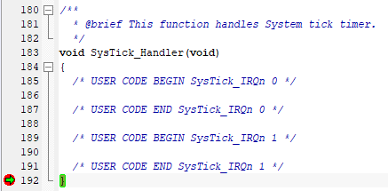

STM32 SysTick LL库#
参考：
《ARM Cortex-M3与Cortex-M4权威指南（第3版）》ISBN：9787302402923
cnblogs[王健]-STM32 的系统滴答定时器( Systick) 彻底研究解读
ST community[Bogdan Golab]-LL_Init1msTick disables SysTick interrupt
CSDN[Brendon_Tan]-STM32CubeMX 实战教程：SysTick 实验（LL 库）
SysTick 介绍#
Cortex-M处理器内集成了一个小型的名为SysTick的定时器，它属于NVIC的一部分；SysTick为简单的24位向下计数器，在使用操作系统时通常用作周期性中断来定期触发OS内核，用于处理任务管理和上下文切换等；当不使用操作系统时，SysTick可以当作简单定时器外设来使用（《ARM Cortex-M3与Cortex-M4权威指南（第3版）》，p215）。下图为SysTick定时器的简单框图

SysTick定时器中存在4个寄存器，CMSIS-Core头文件中定义了一个名为SysTick的结构体，例如在STM32L4的库函数中core_cm4.h定义了如下结构体

CubeMX配置#
-
点击 SYS，将 Timebase Source 选择为 SysTick（项目默认为 SysTick）

-
点击NVIC，配置Time base的中断优先级

-
在Project Manager–>Advanced Setting中选择LL库

-
点击Generate Code生成代码
代码编写与测试#
在main()函数中调用的函数SystemClock_Config()中对SysTick进行初始化：
1
2
3
4
5
6
7
8
9
|
...
LL_RCC_SetAHBPrescaler(LL_RCC_SYSCLK_DIV_1);
LL_RCC_SetAPB1Prescaler(LL_RCC_APB1_DIV_1);
LL_RCC_SetAPB2Prescaler(LL_RCC_APB2_DIV_1);
LL_Init1msTick(80000000);
LL_SetSystemCoreClock(80000000);
...
|
其默认提供1ms的时基：
1
2
3
4
5
|
void LL_Init1msTick(uint32_t HCLKFrequency)
{
/* Use frequency provided in argument */
LL_InitTick(HCLKFrequency, 1000U);
}
|
但LL库的初始化过程默认并不会开启SysTick->VAL向下计数器溢出中断（SysTick_Handler）：
1
2
3
4
5
6
7
8
9
10
11
12
13
14
15
16
|
/**
* @brief This function configures the Cortex-M SysTick source of the time base.
* @param HCLKFrequency HCLK frequency in Hz (can be calculated thanks to RCC helper macro)
* @note When a RTOS is used, it is recommended to avoid changing the SysTick
* configuration by calling this function, for a delay use rather osDelay RTOS service.
* @param Ticks Number of ticks
* @retval None
*/
__STATIC_INLINE void LL_InitTick(uint32_t HCLKFrequency, uint32_t Ticks)
{
/* Configure the SysTick to have interrupt in 1ms time base */
SysTick->LOAD = (uint32_t)((HCLKFrequency / Ticks) - 1UL); /* set reload register */
SysTick->VAL = 0UL; /* Load the SysTick Counter Value */
SysTick->CTRL = SysTick_CTRL_CLKSOURCE_Msk |
SysTick_CTRL_ENABLE_Msk; /* Enable the Systick Timer */
}
|
所以若要在中断函数SysTick_Handler()中进行程序处理，需要手动在main()函数内初始化代码后添加相关代码（Ref：You need LL_SYSTICK_EnableIT();because for LL the IT is not enabled (HAL enables it automatically)）：
1
2
3
|
/* USER CODE BEGIN SysInit */
LL_SYSTICK_EnableIT();
/* USER CODE END SysInit */
|
之后便可在计数器减至0时进入中断函数：

微秒级精确延时#
未验证，仅思路展示，需要重写考虑恢复原有延时
1
2
3
4
5
6
7
|
void Delay_us(uint32_t n) //延时多少微秒，n 就输入多少
{
SysTick->LOAD = 72 * n; //装载计数值，因为时钟 72M，72 次在 1μs
SysTick->CTRL = 0x00000005; //时钟来源设为为 HCLK(72M)，打开定时器
while((SysTick->CTRL & 0x00010000) != 0); //等待计数到 0
SysTick->CTRL = 0x00000004; //关闭定时器
}
|
其他问题（未验证）#
生成代码中默认是以 HCLK 时钟 为 SysTick 时钟源